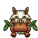
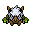

Pokédex / #275

Shiftry #275
GrassDark
A Pokémon that was feared as a forest guardian. It can read the foe's mind and take preemptive action.
Generation 3 · Hoenn

Stats
| Attack | 100 | |
|---|---|---|
| Defense | 60 | |
| Sp. Atk | 90 | |
| Sp. Def | 60 |
In the wild
| Wild level | 85–95 |
|---|---|
| HP | 90 |
| Experience | 15 |
| Egg groups | Field, Grass |
Evolution
- Evolves from Nuzleaf at level 35, with a Leaf Stone.
Moves
| Level | Move | Type | Category | Power | Energy | Cooldown | Effect | |
|---|---|---|---|---|---|---|---|---|
| 1 | Tackle | Normal | Physical | 15 | 15 | 1s | Tackle is one of the most common and basic moves a Pokemon learns. It deals damage with no additional effects. | |
| 5 | Razor Leaf | Grass | Physical | 18 | 60 | 7s | Razor Leaf deals damage and has an increased critical hit ratio. | |
| 7 | Pound | Normal | Physical | 40 | 40 | 6s | Pound inflicts damage and has no secondary effect. | |
| 10 | Fake Out | Normal | Physical | 40 | 40 | 20s | Fake Out inflicts damage and makes the target flinch. | |
| 15 | Leaf Blade | Grass | Physical | 90 | 90 | 14s | Leaf Blade deals damage and has an increased critical hit ratio. | |
| 25 | Faint Attack | Dark | Physical | 60 | 60 | 9s | Faint Attack deals damage and ignores changes to the Accuracy and Evasion stats. | |
| 30 | Synthesis | Grass | Status | – | 150 | 120s | Synthesis restores the user's current HP based on the weather conditions. Under normal conditions Synthesis will restore ½ of the user's total HP. | |
| 40 | Extrasensory | Psychic | Special | 80 | 95 | 18s | Extrasensory inflicts damage and has a 10% chance of causing the target to flinch. | |
| 45 | Harden | Normal | Status | – | 70 | 60s | Harden raises the user's Defense by one stage. | |
| 50 | Hurricane | Flying | Special | 110 | 120 | 23s | Hurricane deals damage and has a 30% chance of confusing the target. | |
| 55 | Leaf Tornado | Grass | Special | 65 | 75 | 18s | Leaf Tornado deals damage and has a 30% chance of lowering the target's Accuracy by one stage. | |
| 60 | Bide | Normal | Physical | – | 200 | 30s | The user of Bide 'stores energy' for 2 turns. At the end of the second turn the Pokemon 'unleashes energy', dealing twice the HP damage it received. | |
| 65 | Foul Play | Dark | Physical | 95 | 105 | 20s | The user turns the target's power against it. The higher the target's Attack stat, the greater the move's power. | |
| 70 | Explosion | Normal | Physical | 250 | 100 | 180s | Explosion deals high damage, but causes the user to faint. |
Field abilities
FlashRock SmashStrengthCut
Special abilities
ChlorophyllEarly Bird
Egg moves
AmnesiaBullet SeedDefogFoul PlayGrassy TerrainLeech SeedNasty PlotQuick AttackRazor WindTake DownWorry Seed
Technical machines
Aerial AceBrick BreakBullet SeedDouble TeamEnergy BallExplosionHyper BeamProtectRestRock SlideRock TombShadow BallSolar BeamSubstituteSwords DanceToxic
Drops
| Item | Amount | Chance | |
|---|---|---|---|
| seed | 1–6 | 88.2% | |
| bamboo leaves | 1 | 70.6% | |
| frostbite herb | 1 | 70.6% | |
| leaf pendant | 1 | 35.3% | |
| leaf | 1 | 19.6% | |
| cure herb | 1 | 17.6% | |
| bunch of ripe rice | 1 | 14.1% | |
| sharp razor | 1 | 14.1% | |
| gracidea | 1 | 13.1% | |
| revival herb | 1 | 13.1% | |
| tropical leaf | 1 | 11.8% | |
| forbidden fruit | 1 | 7.06% | |
| dark claws | 1 | 5.88% | |
| onigiri | 1–5 | 5% | |
| grey-blue powder | 1 | 4.41% | |
| dark crystal | 1 | 3.53% | |
| astral source | 1 | 3.53% | |
| exotic feather | 1 | 1.18% | |
 | shiftry doll | 1 | 0.1% |
| Meadow Plate | 1 | 0.05% | |
| Dread Plate | 1 | 0.05% | |
| Leaf Stone | 1 | 0.02% | |
| held miracle seed | 1 | 0.01% | |
| held black glasses | 1 | 0.01% |